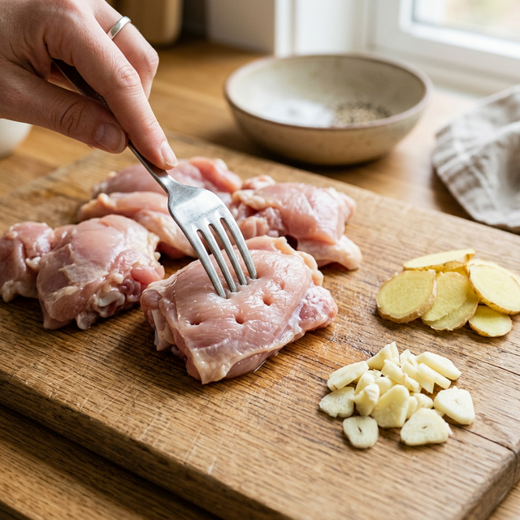
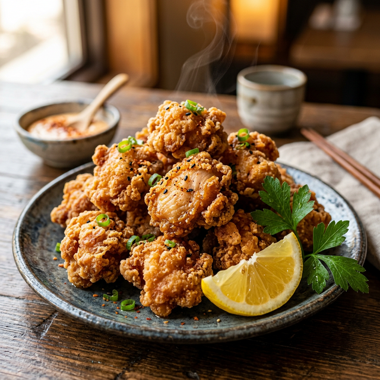

二度揚げでカリッとジューシー
究極のからあげ
白米にもビールにも合わせたい夜下処理で味を入りやすくする。
160℃と180℃の二度揚げで仕上げる。
油淋鶏風ソースで最後まで飽きない一皿です。
時間
30分
難易度
★★★★☆
カロリー
1550 kcal
P:
120g
たんぱく質
F:
110g
脂質
C:
35g
炭水化物
01
食べる理由
ハマる人
- 揚げたてのサクサク感を追求したい人
- 白ご飯にもビールにも合う揚げ物が食べたい人
おすすめのシーン
- 家族が集まる週末の食卓
- ガッツリした揚げ物でお腹を満たしたい夜
03
材料
鶏肉の下準備
メイン
- 鶏もも肉
- 500g
- 塩・胡椒
- 適量
- 清酒
- 適量
- 卵
- 1個
衣
- 片栗粉
- 4
- 小麦粉
- 1
- サラダ油
- 少量
油淋鶏ソース
- 酢・砂糖
- 各3
- 醤油
- 2
- ごま油
- 1
薬味
- 長ネギ
- 適量
- 生姜
- 適量
- ラー油
- お好み
04
作り方
05
まとめ
- 下処理で味を入りやすくする。
- 衣は片栗粉4、小麦粉1。
- 二度揚げで外カリ中ジューシーにする。